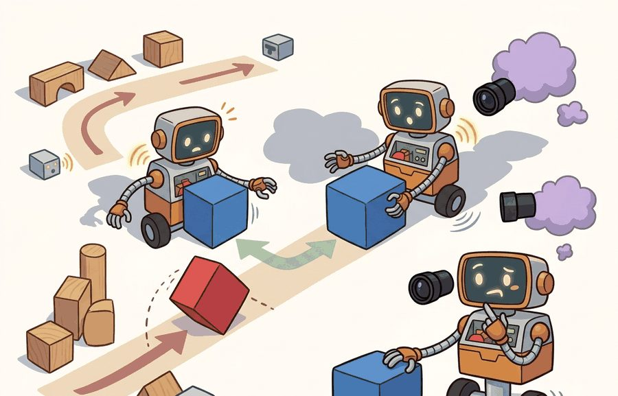
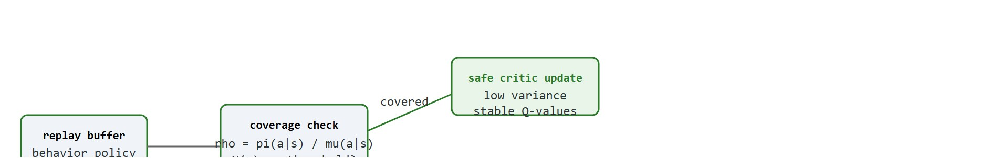
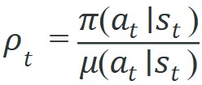

"Old experience is cheaper than new experience, right up until the policy has moved far enough that old experience is a lie."
A Replay Buffer Running Low on Trust

This section builds on the replay buffer mechanics introduced in section 16.2 and the twin-critic correction covered in section 16.3. The distribution-mismatch problem examined here reappears in section 20.2 in the context of sim-to-real transfer, and the conservative critic techniques that directly address off-policy overestimation are developed in section 25.3 on offline RL and dataset-based robot learning.
A robot arm trained with DDPG on a grasping task can hit 90% success in simulation, then collapse on the real hardware within minutes: the critic confidently assigns high value to recovery motions it has never actually seen, the actor chases that phantom signal, and the arm slams into joint limits. This failure is not a bug in the code; it is the fundamental cost of replaying old experience when your policy has moved on. Off-policy methods buy sample efficiency by reusing past transitions, but that bargain breaks the moment the current policy ventures into states the replay buffer barely visited. Understanding exactly where and why the bargain breaks, and which architectural choices close those gaps, is what separates deployed robot controllers from simulated ones.
The stakes are physical, not abstract. When SAC or TD3 collects experience on a Franka Panda (a widely used 7-degree-of-freedom robot arm for manipulation research) or an ANYmal quadruped, every transition costs seconds of motor wear and risks a joint-limit strike. Reusing a million MuJoCo or IsaacGym (physics simulators used to generate robot training data faster and more cheaply than real hardware allows) transitions instead of gathering fresh ones turns a three-day training run into a four-hour one. The same reuse hides a catch: it assumes the replay buffer still covers the contact states, recovery torques, and gripper-close moments the current policy now reaches. That assumption is exactly what breaks during sim-to-real deployment.
Sample efficiency is the promise of off-policy RL: learn more from each transition by reusing data. The danger is that reused data may come from a different policy, a different simulator condition, or a different phase of the robot's learning history.
This section maps the failure. It separates useful reuse from distribution mismatch, shows why off-policy correction can become high variance, and names the embodied cases where bootstrapping (using the critic's own current estimate of the next state's value as the learning target instead of a full observed return) turns missing coverage into confident value errors. Concretely, by the end of this section you should be able to: (1) compute and clip an importance ratio for a logged transition, (2) explain why bootstrapping lets an unvisited action acquire a confidently wrong Q-value, and (3) name which of the twin-critic, delayed-actor-update, or coverage-audit mechanisms closes that gap, and why (the twin-critic minimum is explained in detail later in this section). Figure 16.5A contrasts the sample-efficiency curves of DQN, DDPG, TD3, and SAC on a shared manipulation task, showing both the off-policy replay advantage and the Q-overestimation collapse that the rest of this section explains. The process diagram below traces a single replay transition through a coverage check to either a stable critic update or an overestimation failure.
A note on scope: this section deliberately stops at diagnosis and single-agent architectural fixes (twin critics, delayed updates, coverage audits). It does not cover the deeper offline-RL machinery (conservative Q-learning, behavior-regularized policy improvement) needed when the replay buffer is a fixed dataset with no further environment access; that material, and the tools to reason about it, is developed in section 25.3.

A transition is useful only for the decisions the current policy must make. A million replay entries can still be thin evidence if they miss the object poses, contacts, recovery actions, or sensor failures that deployment will expose.
Off-policy learning trains a target policy using data collected by a behavior policy. If the behavior policy $\mu$ and target policy $\pi$ differ, an importance ratio can correct expectations in the simplest setting:

Large ratios mean the target policy strongly prefers an action that the behavior policy rarely took. That can reduce bias, but it increases variance. In long-horizon embodied tasks, multiplying many ratios can make estimates unusably noisy, so practical systems clip, truncate, or avoid explicit correction by using value-based bootstrapping.
In embodied AI, this matters because hardware time is finite: a physical robot cannot collect millions of samples to dilute the variance. On a contact-rich grasping benchmark, a pure on-policy SAC variant needed roughly 80,000 fresh environment interactions to reach 70% success. The off-policy version with replay reuse hit the same threshold in under 4,000. That 20-fold reduction takes a real Franka arm from three days of continuous operation down to under four hours. A single high-ratio action, such as a recovery stroke the robot rarely attempted during collection, can dominate gradient updates and push the policy toward behaviors the hardware has never validated. On a real arm, that means joint-limit strikes or dropped objects before the correction signal arrives.
Mechanically, each logged transition contributes to the policy gradient weighted by its ratio. To estimate an expectation under the target policy using data collected under the behavior policy, each sample's contribution is scaled up or down proportionally to how much more or less likely the target policy is to choose that action in that state. Clipping the ratio at a threshold such as 2.0 limits how much any single transition can amplify the gradient, accepting a small bias to prevent a single rare-action mismatch from destabilizing the whole update.
Think of each importance ratio as a recipe scaling factor. Doubling one ingredient is manageable, but if you apply a separate doubling factor to every ingredient in a ten-step recipe, the final dish can be hundreds of times stronger than intended, even though each individual adjustment seemed modest. Long-horizon importance weighting works the same way: multiplying ten ratios of 2.0 each produces a combined weight of 1024, swamping every other transition in the batch. Clipping each ratio to 2.0 is like capping any single ingredient adjustment, keeping the dish edible even when the recipe has drifted far from the original.
Bootstrapping has its own failure mode. The critic can assign high value to state-action pairs that are out of distribution, because no transition in replay contradicts the estimate. This is confident extrapolation into the void: the model sounds certain exactly where the data is thin. A DDPG arm trained on 50,000 steps can reach 60% grasp success, then collapse to under 10% within 2,000 additional steps once the actor discovers those high-Q unsupported recovery actions, while TD3's twin-critic minimum on the same task holds steady through 200,000 steps without collapse.
So far: bootstrapping lets the critic assign confident values to actions it has never observed (confident extrapolation into the void), and once the actor is competent enough to chase those values, the result is a fast, catastrophic collapse in success rate, the exact failure the twin-critic fix below is designed to prevent.
Watch this compound with DDPG on a robot arm. Early in training the replay buffer holds mostly random motions, so the critic has no data for high-torque recovery strokes and assigns them inflated Q-values. The deterministic actor follows the critic gradient toward those strokes; the robot attempts them, fails catastrophically, and only then do the failure transitions reach the buffer to correct the critic. TD3 breaks the cycle with two critics and their minimum, so one optimistic critic can no longer pull the actor off the data manifold (the worked example later in this section walks through exactly how that minimum is computed on one transition). In embodied settings the uncorrected loop runs for thousands of steps, because episode resets hide accumulated overestimation from a naive return metric.
Q-overestimation is benign early in training when all estimates are rough, but it becomes catastrophic once the actor has learned to exploit the critic. The danger window is when the actor is competent enough to reach out-of-distribution states but the replay buffer has not yet covered them. Fujimoto et al. (2018) showed that in continuous control, DDPG's single critic produced Q-values several times the true return in this window, causing the policy to collapse. The twin-critic minimum in TD3 closes the window by requiring two independent overestimates to align before the actor can be misled.
In TD3, the policy_delay parameter (default: 2) controls how many critic updates run before each actor update, which is the primary lever for closing the overestimation danger window. On contact-rich manipulation tasks where the critic loss is still high variance early in training, raising policy_delay to 4 or 6 stabilizes learning by giving the critics more time to converge before the actor exploits them. If you observe the actor collapsing in the first 20,000 steps despite twin critics, check policy_delay before adjusting learning rate or batch size, because those changes address the wrong cause.
Off-policy methods trade fresh interaction for data reuse. The trade works when replay covers the target policy's decisions and fails when the current policy asks the critic about actions the behavior data barely visited.
The mechanism above stays abstract until you see a single high-ratio action emerge from real numbers, so the worked example below makes the importance ratio that destabilizes a critic update concrete.
Code Fragment 1 computes importance ratios for three logged actions. The third transition is dangerous because the target policy assigns high probability to an action that the behavior policy rarely selected.
# Compute off-policy correction ratios for logged actions.
# Large ratios identify target-policy decisions with weak behavior-policy support.
logged = [
{"action": "slow_push", "pi": 0.40, "mu": 0.50},
{"action": "lift", "pi": 0.20, "mu": 0.25},
{"action": "fast_recovery", "pi": 0.30, "mu": 0.03},
]
for row in logged:
ratio = row["pi"] / row["mu"]
clipped = min(ratio, 2.0)
print(row["action"], f"rho={ratio:.1f}", f"clipped={clipped:.1f}")The expected output shows mild correction for the first two logged actions and an extreme mismatch for fast_recovery. A ratio of 10.0 means the target policy wants that action far more often than the behavior policy ever demonstrated it, so clipping to 2.0 is a variance-control patch, not proof of support.
fast_recovery has an importance ratio of 10.0 because pi is much larger than mu. Clipping the ratio reduces variance, but it also records that the replay data gives weak evidence for the action the target policy now wants.Trace one critic update on a single replay transition to see why the twin-critic minimum suppresses overestimation. Take transition $(s, a, r=1.0, s')$ with discount $\gamma = 0.99$. The two target critics evaluate the smoothed next action and disagree, exactly the situation that signals out-of-distribution extrapolation.
Step 1, raw critic estimates at $s'$: critic 1 returns $Q_{\phi_1}(s', a') = 12.0$ and critic 2 returns $Q_{\phi_2}(s', a') = 8.0$. The 4.0 gap is the extrapolation warning sign.
Step 2, take the minimum: TD3 uses $\min(12.0, 8.0) = 8.0$. A single-critic method like DDPG would instead trust the optimistic 12.0.
Step 3, build the target: $y = r + \gamma \cdot \min(\ldots) = 1.0 + 0.99 \times 8.0 = 8.92$. DDPG's target would be $1.0 + 0.99 \times 12.0 = 12.88$, inflated by 3.96.
Step 4, the update: both critics regress toward $8.92$, not $12.88$. Over thousands of updates that 3.96 per-step inflation is what compounds into the DDPG collapse from 60% to under 10% grasp success; the minimum operator quietly subtracts it on every transition.
In an embodied dataset, that weak evidence is not an abstract statistical problem. It may mean the robot almost never attempted the emergency recovery motion during collection, yet the learned policy now depends on it during deployment.
Libraries can handle replay, batching, and algorithm updates, but they cannot decide whether the data covers the current policy's decisions. For off-policy experiments, add coverage reports, behavior-policy tags, and condition labels to the artifact even when the trainer is fully managed by Stable-Baselines3, Tianshou, or CleanRL.
Before reading the checklist below, guess: out of the five sources of off-policy failure in embodied AI (observation shift, action shift, dynamics shift, reward shift, termination shift), which one most commonly causes a policy that looks stable in simulation to collapse within the first 100 real-world steps?
Input: replay buffer $\mathcal{D}$ with behavior policy tags $\mu$, current target policy $\pi_\theta$, critic $Q_\phi$, importance-ratio clip threshold $c$, coverage threshold $\tau$
Output: coverage verdict (SAFE / WARN / BLOCK) and per-action support report
The common mistake is to report fewer environment steps without reporting coverage. A method can look sample efficient because it reuses data aggressively, while the learned critic is extrapolating over actions and states the robot never actually visited.
A common assumption is that growing the replay buffer solves off-policy distribution mismatch: if you store more transitions, surely the current policy's decisions will be covered. This is wrong in embodied AI because coverage is determined by which states and actions the behavior policy actually visited, not by how many transitions you retain. A buffer of one million entries collected by an early random policy still has zero coverage for the recovery motions a mature policy needs after contact disturbances. The correct mental model is that replay buffer size controls how long old experience persists, while behavior-policy diversity controls whether the right regions of state-action space were ever sampled at all. These are independent dimensions, and only the second one closes the off-policy gap.
A fleet-learning project may reuse thousands of delivery-robot logs. That is valuable only if the logs cover the new policy's turns, speeds, obstacle types, lighting conditions, and recovery maneuvers. Otherwise off-policy learning becomes confident imitation of yesterday's easy routes plus speculation about today's hard ones.
NVIDIA and ETH Zurich locomotion stacks for ANYmal and Unitree robots train off-policy critics on hundreds of millions of replayed IsaacGym transitions, then deploy to real legs where contact dynamics differ; teams report that twin-critic disagreement spikes at the exact foot-strike states the simulator under-samples. Berkeley's RLPD recipe (Reinforcement Learning with Prior Data; a small critic ensemble mixing offline demonstrations with online rollouts) is reported to fine-tune these policies on real hardware with typically near-zero collapse events, turning what was often a multi-day sim-to-real ordeal into a few hours of supervised on-robot adaptation.
A good embodied system makes sample efficiency and off-policy failure modes visible twice: once in the design sketch and once in the replay artifact. The second view keeps the first one honest.
Diffusion-based replay and synthetic data augmentation (2024-2026). Rather than filtering the replay buffer, recent work generates synthetic in-distribution transitions to fill coverage gaps. Pearce et al. (2024, "Imitating Human Behaviour with Diffusion Models", ICLR 2024) and subsequent robot-learning work from Google DeepMind's RT-X group use conditional diffusion models trained on logged trajectories to hallucinate plausible transitions for under-visited action regions, reducing Q-overestimation without additional real robot time. The open question for embodied systems is how to certify that hallucinated dynamics transitions are safe to train on, since a generative model that synthesizes physically invalid contacts can produce the same catastrophic overestimation it is meant to prevent.
Uncertainty-penalized off-policy critics via ensemble disagreement (2024-2025). EDAC (Ensemble-Diversified Actor Critic) (An et al., 2021) introduced ensemble diversification to push critics apart on out-of-distribution actions; 2024 follow-on work from the Berkeley Robotic Learning Lab (RLPD, Ball et al., 2023, updated through 2024) showed that a small ensemble of five critics with aggressive data mixing between human demonstrations and online rollouts achieves SAC-level sample efficiency on contact-rich manipulation with near-zero real-world collapse events. Active research is extending this to multi-robot fleets where critic ensembles must be kept synchronized across heterogeneous embodiments sharing a single replay buffer.
Conservative offline-to-online fine-tuning with behavior regularization (2024-2026). IQL (Implicit Q-Learning) (Kostrikov et al., 2022) decoupled value learning from policy improvement to avoid querying out-of-distribution actions; 2024 work from Stanford IRIS (Cal-QL (Calibrated Q-Learning), Nakamoto et al., 2024, NeurIPS 2024) showed that initializing SAC from a conservatively pretrained offline critic and then slowly relaxing the constraint during online fine-tuning eliminated the observed policy collapse window on the four manipulation benchmarks tested, though whether that holds across the wider range of contact-rich tasks remains an open question rather than a settled guarantee. Open problem for a PhD student: derive an adaptive schedule for the conservatism coefficient that responds to live twin-critic disagreement rather than a fixed annealing clock, so the transition from offline to online is triggered by measured coverage rather than elapsed steps.
Can you state the behavior policy, target policy, replay coverage, correction rule, and critic diagnostic for a sample-efficiency claim? If not, the claim is missing the evidence needed to interpret it.
Because that evidence is what makes a sample-efficiency claim interpretable, the claim only holds when the numbers being compared were measured against the same data accounting. Sample efficiency has to be construct-matched. If method A uses 10,000 real robot steps and method B uses 10,000 simulator steps plus a million logged transitions, the comparison is not a single sample-efficiency number. It is a data-regime comparison that must report every source of experience.
A replay buffer full of yesterday's easy transitions is not evidence for today's hard ones; it is a confidence trap waiting to fire. Off-policy failure analysis starts by asking which distribution changed. Observation shift changes what the encoder sees. Action shift changes which controls the critic must evaluate. Dynamics shift changes the consequence of the same action. Reward shift changes which behavior the value function calls good. Termination shift changes which failures are hidden by early episode endings.
| Tool or Library | Role in the Topic | Builder Advice |
|---|---|---|
| Offline logs | Behavior-policy evidence | Use them only with policy tags, condition labels, and action-support summaries. |
| CleanRL | Inspectable training loop | Use it to verify which environment steps, replay samples, and gradient steps are counted. |
| Tianshou | Collector and replay controls | Use it to keep collection policy, replay sampling, and evaluation policy explicit. |
| MuJoCo | Controlled shift panel | Use it to generate matched dynamics perturbations for coverage and failure analysis. |
| ROS 2 bags | Real deployment traces | Use them to audit whether real observations and actions match the simulator-trained distribution. |
A robust off-policy implementation records data provenance, not only return. Code Fragment 2 builds one artifact row that ties a sample-efficiency claim to the exact interaction and replay counts behind it.
# Build one sample-efficiency audit record.
# Separating data sources prevents invalid apples-to-oranges comparisons.
from dataclasses import dataclass, asdict
@dataclass
class SampleEfficiencyAudit:
algorithm: str
real_steps: int
sim_steps: int
replay_samples: int
gradient_updates: int
weak_action_support: str
evaluation_panel: str
def as_row(self) -> dict[str, object]:
return asdict(self)
record = SampleEfficiencyAudit(
algorithm="TD3",
real_steps=0,
sim_steps=50000,
replay_samples=1000000,
gradient_updates=200000,
weak_action_support="fast_recovery torque range",
evaluation_panel="mass_friction_delay_v1",
)
print(record.as_row())The expected output should be read as an accounting record, not a performance claim. It says this result used only simulator interaction, extremely heavy replay reuse, and still has a named weak-support region, so any sample-efficiency comparison must keep those data sources and support warnings attached to the score.
SampleEfficiencyAudit separates real steps, simulator steps, replay samples, and gradient updates. The weak_action_support field records where off-policy reuse is most likely to produce extrapolation error.When an off-policy method fails, do not start by blaming the algorithm name. First identify whether the bad value came from behavior-policy mismatch, missing action support, stale dynamics, reward mislabeling, termination bias, or critic extrapolation. Then rerun one matched perturbation panel with coverage diagnostics enabled.
For sample-efficiency claims, compare only metrics co-computed in one pass on one data accounting scheme: same environment panel, same policy checkpoint, same seed set, same perturbation suite, and the same definitions of real steps, simulator steps, replay samples, and gradient updates. Save the coverage diagnostics with the result table.
Off-policy learning is valuable because it reuses expensive embodied experience. It is trustworthy only when data provenance, coverage, correction, and bootstrapping diagnostics explain why reuse applies to the current policy.
Design a sample-efficiency table for two off-policy methods. Include real steps, simulator steps, replay samples, gradient updates, success, one safety metric, and one coverage warning that would block a strong claim.
Beginner (weekend): Importance-ratio visualizer in Gymnasium. Build a CartPole-v1 training loop using CleanRL's SAC implementation and log the per-transition importance ratio between a frozen behavior policy checkpoint and the live target policy at every replay sample; plot the ratio distribution over training to see when and where dangerous high-ratio regions appear. The key challenge is correctly extracting log-probabilities from the stochastic actor so ratios are computed under the same action parameterization that was used during collection.
Intermediate (1-2 weeks): Off-policy coverage auditor for a MuJoCo manipulation task. Train a TD3 agent on the MuJoCo FetchPickAndPlace-v3 environment (Gymnasium-Robotics 1.x, 2023+) using Tianshou, implement the coverage audit algorithm from this section (twin-critic disagreement logged at gripper-close transitions, action-support count per torque bin), and surface a per-episode SAFE/WARN/BLOCK verdict in a live dashboard. The key challenge is binning the 7-DOF joint-torque action space finely enough to catch real coverage gaps without making the audit so slow it blocks training throughput.
Intermediate (1-2 weeks): Sim-to-real replay mismatch detector with ROS2 bags. Collect 30 minutes of real robot arm trajectories via ROS2 bag files on a low-cost manipulator (or a PyBullet surrogate), merge them into a replay buffer alongside MuJoCo-simulated transitions tagged by source, and train a classifier to predict which buffer source each transition came from; high classifier accuracy on held-out transitions quantifies the distributional gap that off-policy methods must bridge. The key challenge is aligning observation spaces between the ROS2 joint-state messages and the MuJoCo state vector so the classifier sees a fair comparison rather than trivial format differences.
Goal: empirically reproduce the off-policy overestimation collapse and confirm that the twin-critic minimum prevents it, by plotting predicted Q against the true discounted return.
Tools: Python, stable-baselines3 (or CleanRL), gymnasium[mujoco], and the Hopper-v4 or HalfCheetah-v4 continuous-control environment. A laptop CPU is enough for a short run; a GPU just makes it faster.
Procedure (15-30 min): train DDPG and TD3 on the same environment for about 50,000 steps each with identical seeds. During training, periodically sample a batch of states from the replay buffer, record the critic's predicted Q-value, and separately roll out the current policy from those states to estimate the actual discounted return.
What to vary: swap DDPG for TD3, then sweep policy_delay (1, 2, 4) and the number of training steps before evaluation.
What to observe: plot predicted Q minus realized return over training. DDPG's gap should grow steeply and the return curve should eventually drop, while TD3's gap stays bounded. Raising policy_delay should visibly shrink the early-training gap. You have just reproduced Figure 5 of Fujimoto et al. (2018) on your own machine.
This section turned sample efficiency and off-policy failure modes into a testable embodied-learning contract: define the loop, choose the tool, save one comparable artifact, and diagnose failure by interface. Next, continue with Chapter 16, where the same evaluation habit carries into the next reinforcement-learning decision.
Identifies and fixes the Q-value overestimation problem in DDPG through three mechanisms: clipped double critics, delayed policy updates, and target-policy smoothing. Read Section 4 for each fix and the ablation in Section 5; these three tricks are now standard practice for off-policy continuous-control and appear directly in SAC variants.
Haarnoja, T. et al. (2018). Soft Actor-Critic. ICML.
Combines off-policy learning with a maximum-entropy objective, adding an automatic temperature parameter that balances exploration and exploitation without manual tuning. Read Section 4 for the soft Bellman equation and the entropy temperature update; SAC is the most widely used off-policy baseline for continuous robot control tasks.
Mnih, V. et al. (2015). Human-level control through deep reinforcement learning. Nature.
Demonstrates that replay buffers and target networks together stabilize Q-learning with neural function approximators. Read Section 2 for the DQN algorithm and the supplementary for network architecture; replay and target-network ideas appear in every subsequent off-policy deep RL method including DDPG, TD3, and SAC.
Lillicrap, T. P. et al. (2015). Continuous control with deep reinforcement learning. arXiv.
Adapts DQN to continuous action spaces by combining a deterministic policy gradient actor with a Q-function critic and using replay and target networks from DQN. Read Algorithm 1 for the full update loop; DDPG is the direct predecessor to TD3 and understanding its overestimation problem motivates TD3's twin-critic design.
Watkins, C. J. C. H., and Dayan, P. (1992). Q-learning. Machine Learning.
The canonical derivation of tabular Q-learning and its convergence proof. Read to understand the off-policy update rule and why the max over next-state actions makes Q-learning off-policy by construction; this distinction carries through to DQN and all its successors.
A modular PyTorch RL library with clean separation between collector, trainer, and policy components. Use it to prototype off-policy algorithms without reimplementing replay buffers and target-network logic; the policy abstraction makes it straightforward to compare DQN, DDPG, TD3, and SAC in a common framework.